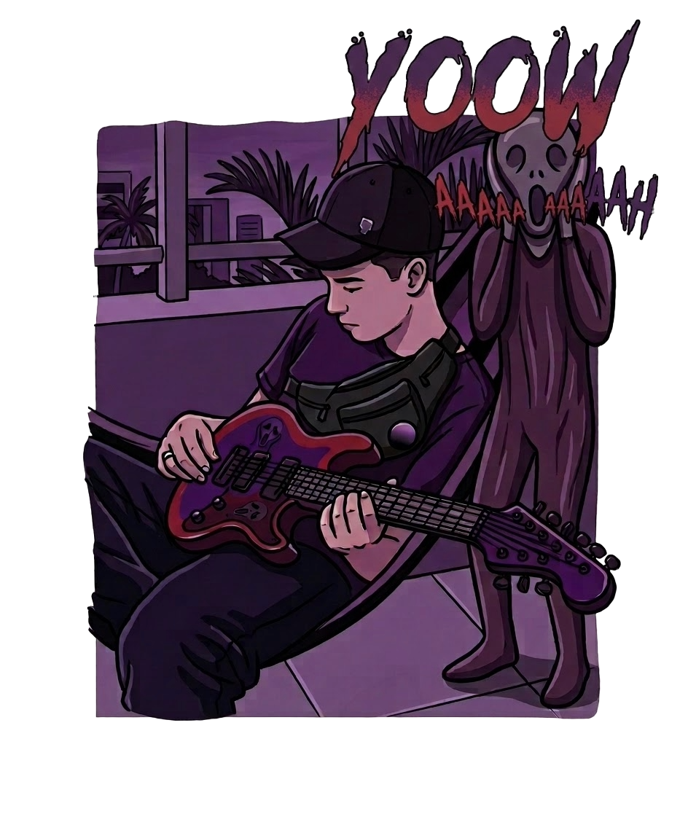
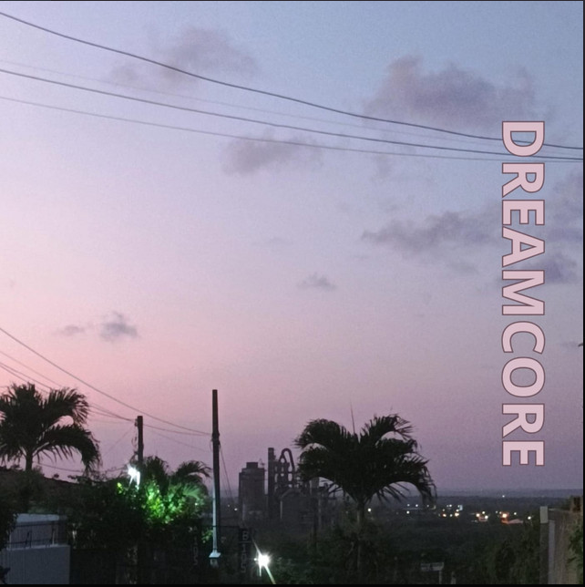
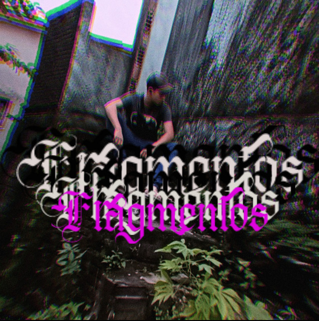
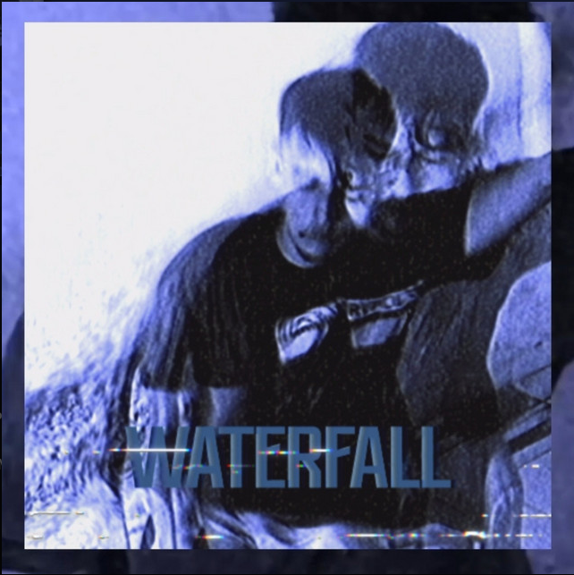

Música instrumental experimental, paisagens sonoras e expressão emocional.
Ouvir trabalhosTiago Xavier é um músico brasileiro que utiliza a música como uma forma profunda de expressão pessoal. Instrumentista de cordas e compositor independente, sua obra transita entre o experimental, o instrumental e momentos de intensa carga emocional.
Seu trabalho explora contrastes: calmaria e distorção, introspecção e explosão sonora, silêncio e densidade. Cada composição surge como uma tentativa de traduzir sentimentos, memórias e reflexões em paisagens sonoras.

Tiago Xavier desenvolveu sua trajetória artística a partir de uma relação profundamente pessoal com a música. Desde cedo encontrou nos instrumentos de corda uma forma de traduzir emoções que muitas vezes não poderiam ser expressas apenas em palavras.
Seu processo criativo é marcado pela experimentação e pela liberdade estética, misturando elementos de rock alternativo, lo-fi, música experimental e estruturas rítmicas não convencionais.
A música que faço não nasce da necessidade de provar habilidade técnica, mas da necessidade de expressar algo verdadeiro.
Entre o silêncio e o ruído encontro um espaço onde emoções podem existir sem explicação.
Criar música é transformar sentimentos em som e permitir que cada pessoa encontre nessas paisagens sonoras algo que dialogue com sua própria história.

EP instrumental com 4 faixas que explora atmosferas introspectivas e texturas etéreas.

Cinco composições que refletem diferentes momentos emocionais e experimentações sonoras.

EP conceitual que encerra uma trilogia e acompanha uma transformação sonora.